فرادرس زیر ذرهبین!
در این پست قصد دارم وبسایت فرادرس رو ببرم زیر ذرهبین! در صفحه اصلی، یک نمای کلی از آموزش های موجود در سایت به نمایش گذاشته شده :
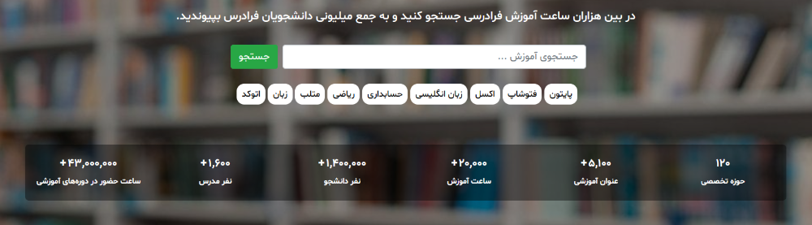
تمام آمار هایی که در ادامه خواهم گفت در آینده ممکنه کمی تغییر کنه. چون قطعا آموزش های جدیدی به سایت اضافه خواهد شد و قیمت آموزش ها هم ممکنه دستخوش تغییراتی بشه. برای شروع لیست آموزش های موجود در سایت رو استخراج کردم. از طریق لینک زیر میتونید تمام آموزش های موجود در فرادرس رو مشاهده کنید :
من در مجموع اطلاعات ۵۲۵۹ آموزش رو استخراج کردم. در مرحله بعدی کامنت های هر کدوم از این آموزش ها رو جمعآوری کردم که مجموعش به ۲۵,۱۴۵ عدد رسید. نکته جالب اینه که ۲۰۰۷ تا از آموزش ها هیچ کامنتی ندارند! یعنی این تعداد کامنت فقط برای ۳۲۵۲ آموزشه! همچنین به طور میانگین هر آموزش ۴ کامنت داره. نمودار توزیع تعداد کامنت های این ۳۲۵۲ آموزش رو در تصویر زیر میتونید مشاهده کنید :
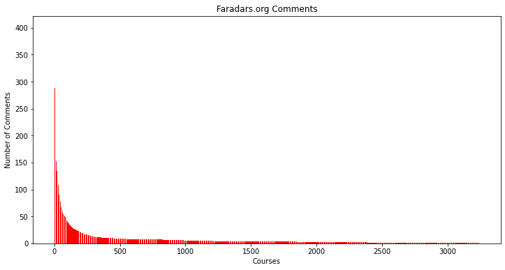
لیست کامل تعداد کامنت های هر آموزش رو در لینک زیر قرار دادم :
بربحث ترین کامنت مربوط به آموزش زیره که ۱۰ تا ریپلای داره :
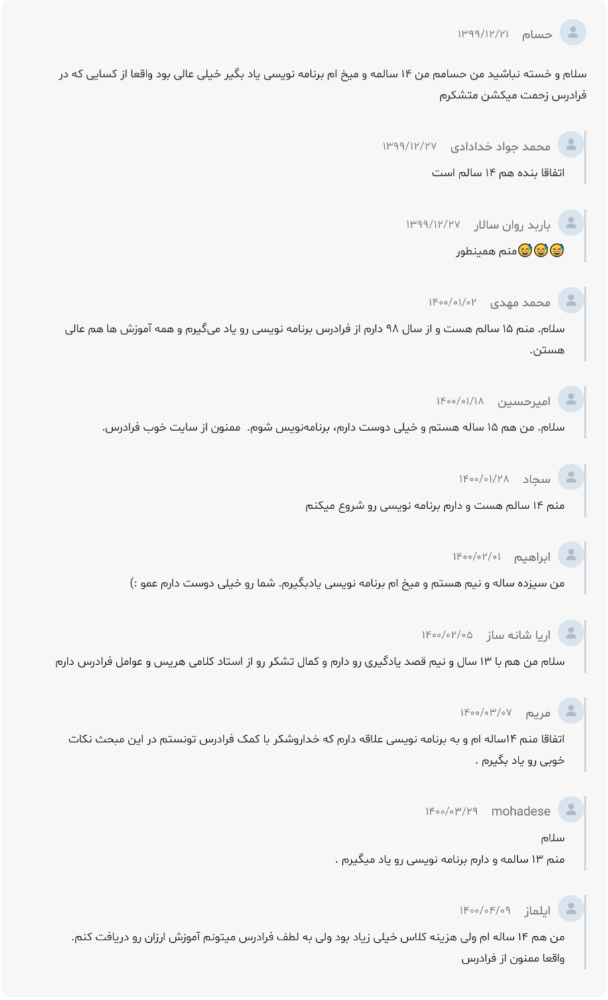
کامنت های آموزش زیر بیشترین تعداد ریپلای رو گرفته :
لیست کامل تعداد ریپلای های هر آموزش رو در لینک زیر قرار دادم :
ابر کلمات تمام کامنت ها در تصویر زیر نمایش داده شده است :
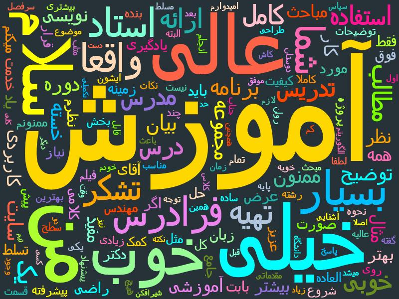
نمودار زیر نشان میدهد که چه تعداد کامنت در سال های مختلف نوشته شده است :
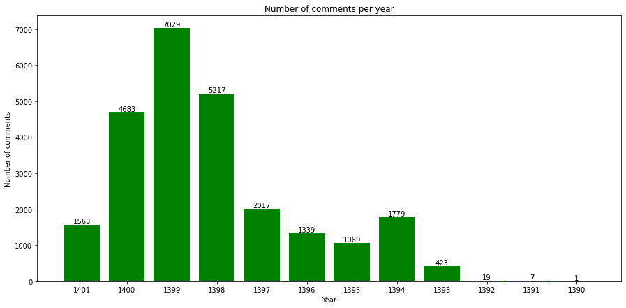
همانطور که مشاهده میکنید در سال ۱۳۹۹ بیشترین تعداد کامنت نوشته شده است. همچنین، قدیمیترین کامنت برای تاریخ ۱۳۹۰/۱۲/۱۱ است که برای آموزش زیر نوشته شده است :
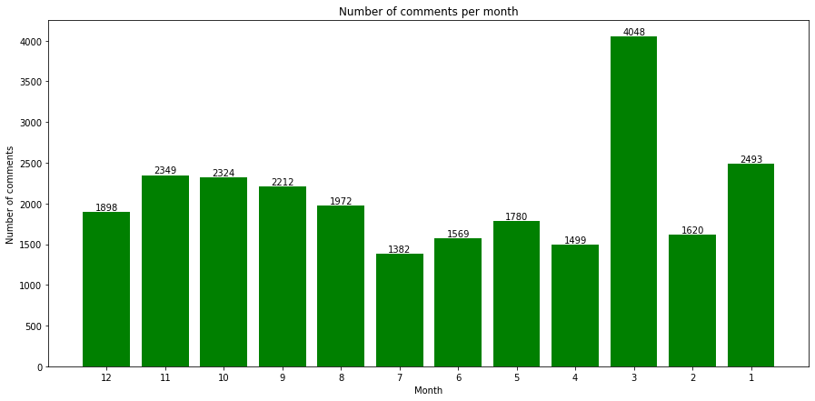
نمودار زیر نشان میدهد که در ماه های مختلف چه تعداد کامنت نوشته شده است :

همانطور که در نمودار بالا نیز مشاهده میکنید، بیشترین تعداد کامنت در ماه خرداد نوشته شده است! خرداد فصل چیه؟ آفرین!تصویر زیر ابر کلمات اسامی نویسندگان کامنت ها را نشان میدهد :

لینک زیر، لیست اسامی افرادی است که بیشترین تعداد کامنت را نوشتهاند :
خیلی ها فقط با اسم کوچیک کامنت نوشتند و اونایی هم که اسم و فامیل کاملشون رو نوشتند معمولا مدرس همون آموزش هستند که پاسخ کامنت ها رو دادند.طولانی ترین کامنت هم با ۲۱۱۰ کاراکتر برای آموزش زیر نوشته شده است :
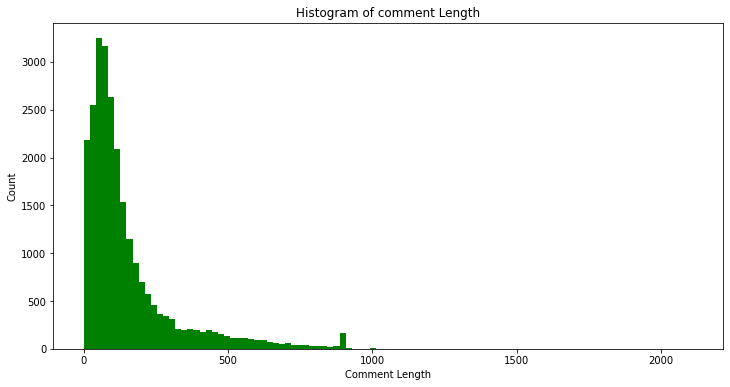
نمودار زیر هم توزیع طول کامنت ها رو نشون میده :
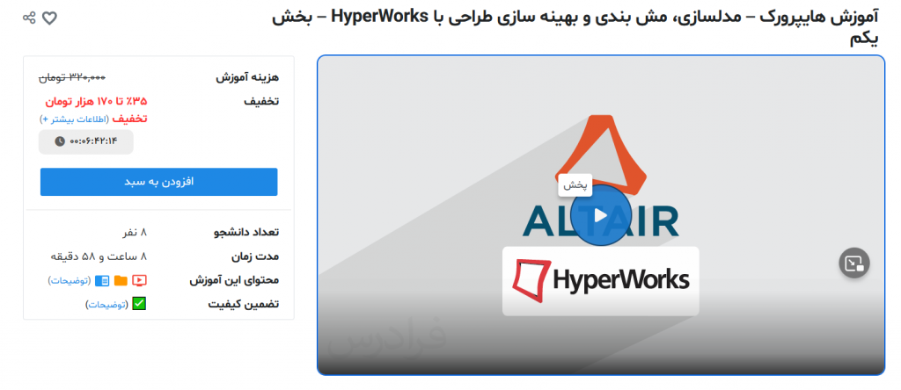
همونطور که از نمودار بالا هم مشخصه، بیشتر کامنت ها کمتر از ۲۸۰ کاراکتر دارند. برای اینکه ۲۸۰ کاراکتر رو بهتر درک کنید، توی توییتر هم حداکثر ۲۸۰ کاراکتر میتونید بنویسید. بنابراین طول بیشتر کامنت ها کمتر از طول یک توییت است!آموزش زیر، گرون ترین آموزش فرادرس است که قیمت آن ۳۲۰ هزار تومان است :
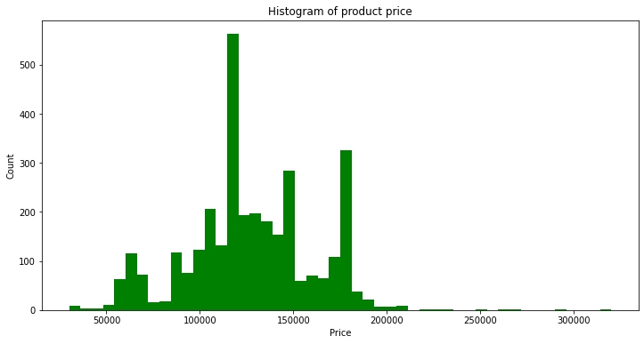
نمودار زیر توزیع قیمت آموزش های فرادرس رو نشون میده که از رنج ۳۰ هزار تا ۳۲۰ هزار تومنه :
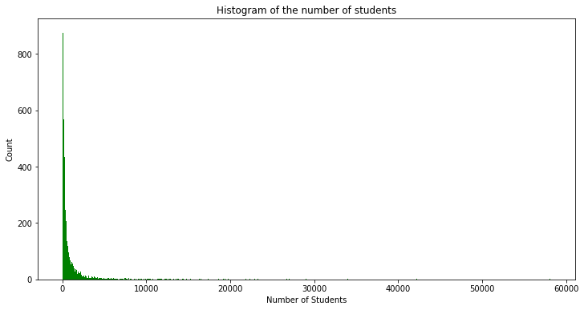
میبینید که قیمت بیشتر آموزش ها در بازه ۸۰ هزار تومن تا ۱۵۰ هزار تومن قرار داره. میانگین قیمت آموزش های فرادرس هم ۱۲۷ هزار تومنه! از بین ۵۲۵۹ آموزشی که در سایت وجود داره، ۲۰۰۲ آموزش رایگان هستند. بخش عمدهای از این آموزش های رایگان فقط تکه هایی از آموزش های پولی هستند. ۳۲۵۵ آموزش هم پولی هستند. نمودار زیر هیستوگرام تعداد دانشجو های همه آموزش ها رو نشون میده :
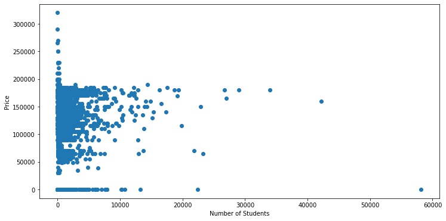
از نمودار بالا میشه فهمید در حدود ۸۰ درصد آموزش ها کمتر از ۱۰۰۰ دانشجو دارند. تعداد دانشجو های آموزش ها به طور میانگین ۸۸۰ نفر است. حالا این سوال پیش میاد که آیا رابطهای بین قیمت آموزش و تعداد افرادی که آموزش رو خریداری کردند وجود داره یا نه؟! به نمودار زیر توجه کنید:
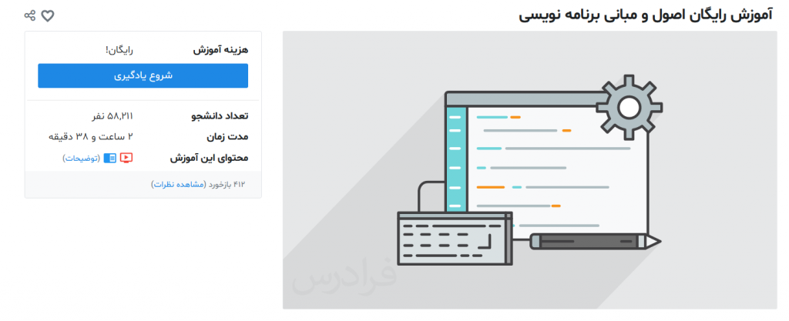
نمودار های این مدلی رو باید خیلی با احتیاط تحلیل کنید. برای تحلیل این مدل نمودار ها باید دو تا مفهوم Correlation (همبستگی) و Causation (علیت) رو باید به خوبی درک کرده باشید. یه مثال بزنم. اگر یه نمودار داشته باشیم که نشون بده افزایش فروش بستنی باعث افزایش آفتاب سوختگی میشه، میتونیم نتیجه بگیریم که خوردن بستنی باعث آفتاب سوختگی میشه؟! قطعا نه! درسته، بین افزایش فروش بستنی و آفتاب سوختگی یک همبستگی خوبی وجود داره ولی از هر رابطه همبستگی نمیشه رابطه علیت رو نتیجه گرفت. توصیه میکنم مطلب زیر رو در این رابطه بخونید :
همونطور که از نمودار بالا هم مشخصه، بین دو متغیر قیمت آموزش و تعداد آموزش های فروخته شده همبستگی بالایی وجود نداره. اگر ضریب همبستگی پیرسن رو هم برای این مقادیر محاسبه کنیم به عدد ۰.۱۷ میرسیم که بازم نشون میده رابطه خاصی بین این دو متغیر وجود نداره.آموزش زیر با ۵۸,۲۱۱ دانشجو، پر مخاطب ترین آموزش فرادرس بوده :
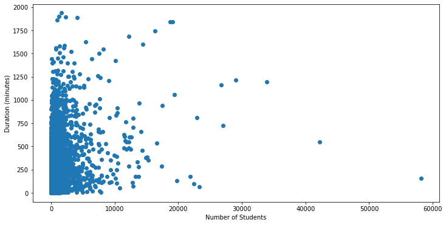
حالا میخوام بررسی کنم که آیا رابطهای بین مدت زمان آموزش و تعداد افرادی که آموزش رو خریداری کردند وجود داره یا نه؟! به نمودار زیر توجه کنید :
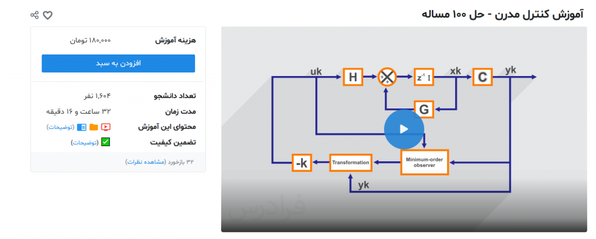
بازم مشاهده میکنیم که رابطه خاصی وجود نداره. ضریب همبستگی پیرسن هم ۰.۲۷ است. حالا یه نکته جالب! من چند هفته پیش این گزارش رو تا یه جایی نوشتم و به دلیل کمبود وقت ولش کردم و الان که دوباره دیتا رو جمع کردم ضریب همبستگی بیشتر شده! قبلا ۰.۲۴ بود و الان ۰.۲۷ شده! یه چند وقت دیگه دوباره بررسی میکنم ببینم تغییر کرده یا نه؟! این قضیه برای همبستگی تعداد دانشجو ها و قیمت آموزش ها هم همینجوری بود و از چند هفته پیش بیشتر شده!آموزش زیر هم طولانی ترین آموزش فرادرس است :
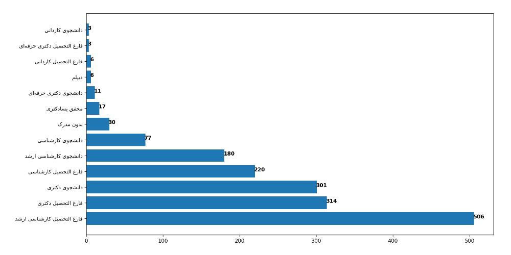
آموزش های سایت توسط ۱۶۷۲ مدرس تهیه شده است که مدرک تحصیلی آنها به شرح زیر است :
- ۱۷ محقق پسادکتری
- ۳۱۴ فارغ التحصیل دکتری
- ۳۰۱ دانشجوی دکتری
- ۳ فارغ التحصیل دکتری حرفهای
- ۱۱ دانشجوی دکتری حرفهای
- ۵۰۶ فارغ التحصیل کارشناسی ارشد
- ۱۸۰ دانشجوی کارشناسی ارشد
- ۲۲۰ فارغ التحصیل کارشناسی
- ۷۷ دانشجوی کارشناسی
- ۶ کاردانی
- ۳ دانشجوی کاردانی
- ۶ نفر با مدرک دیپلم
- ۲۸ نفر بدون مدرک
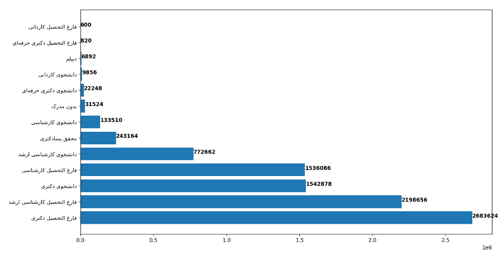
نمودار زیر نشون میده مدرسین با چه مدرک تحصیلی بیشترین تعداد دانشجو را در فرادرس دارند :
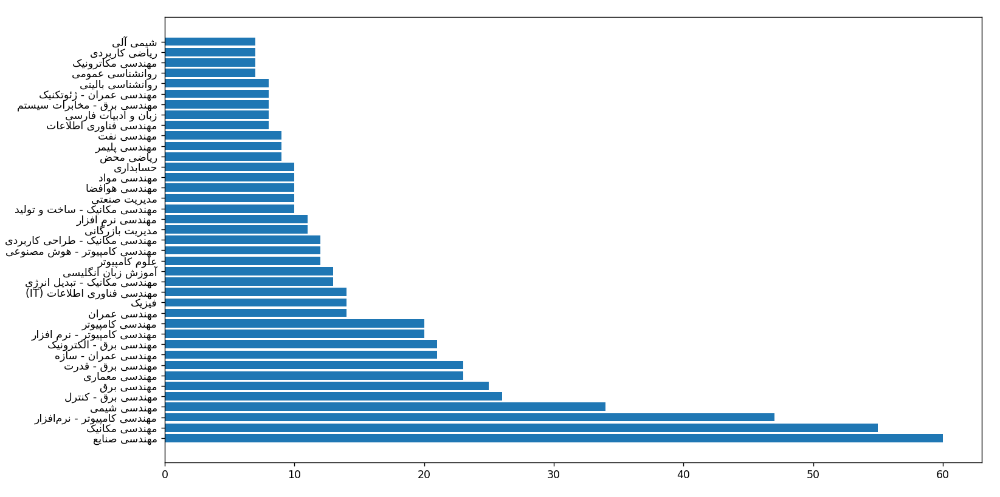
همانطور که در نمودار بالا هم مشاهده میکنید، فارغ التحصیلان دکتری و کارشناسی ارشد بیشترین تعداد دانشجو را در فرادرس دارند. نکته جالب هم اینه که با وجود اینکه تعداد فارغ التحصیلان کارشناسی ارشد تقریبا دو برابر فارغ التحصیلان دکتری است، اما تعداد مخاطبین افرادی که فارغ التحصیل دکتری هستند بیشتره!نمودار زیر نشان میدهد کدام رشته بیشترین تعداد مدرس را دارد :
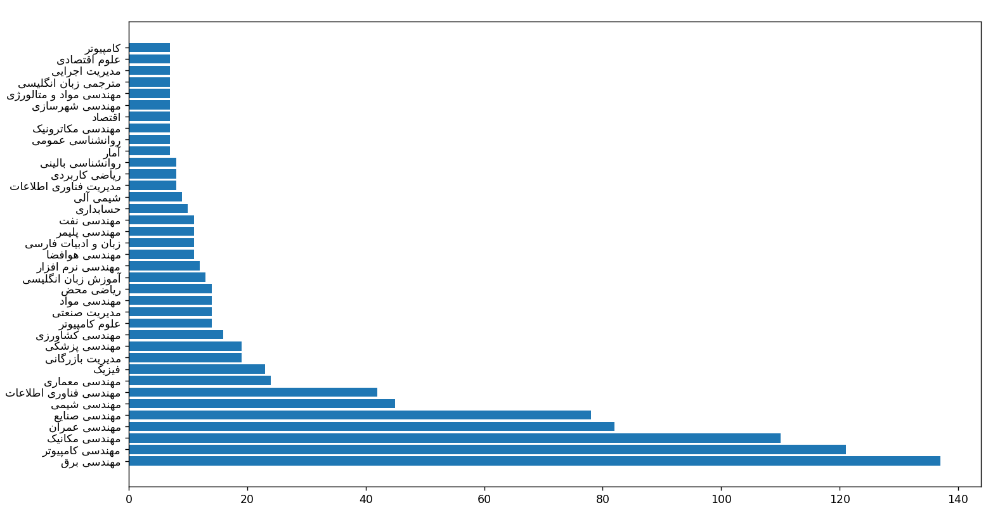
همونطور که در نمودار بالا مشاهده میکنید خیلی از رشته ها گرایش های مختلفی دارند. اگر گرایش ها رو حذف کنیم نتیجه به صورت زیر میشه :
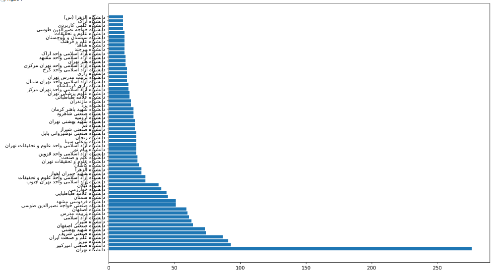
میبینید که نتیجه فرق کرد! در نمودار قبلی که گرایش ها رو داشتیم مهندسی صنایع اول بود. اما زمانی که گرایش ها رو حذف کردیم مهندسی برق اول شد و مهندسی صنایع پنجم!مدرسین زیر بیشترین درآمد را از آموزش ها داشتند :https://faradars.org/instructors/sayyed-mostapha-kalami-heris : 79,455,140,000https://faradars.org/instructors/farshid-shirafkan : 68,685,840,000https://faradars.org/instructors/omid-zandi : 40,014,730,000https://faradars.org/instructors/seyyed-reza-hashemian : 31,585,018,000https://faradars.org/instructors/mohammad-nasimifar : 22,838,770,000همه مبالغ بالا به تومان است! البته نکتهای که باید بگم اینه که قطعا همه این مبالغ به مدرس نرسیده. بعضی از آموزش ها به صورت مشارکت در فروش بوده. یعنی مدرس فقط درصدی از فروش رو دریافت میکنه. بعضی از آموزش ها هم به فرادرس فروخته شده. یعنی مدرس مثلا n میلیون آموزش رو به فرادرس میفروشه و دیگه درآمدی که به دست میاد میشه سهم خود فرادرس و مدرس سهمی نداره. قیمت آموزش ها هم در طول زمان تغییر کرده. این مبالغی که من حساب کردم بر اساس قیمت فعلی آموزش بوده. از طرفی، هر چند وقت یکبار بعضی از آموزش های فرادرس برای یه مدت محدودی رایگان میشه و اینطوری میشه که افراد زیادی بدون پرداخت هزینه میتونن آموزش رو دریافت کنن. بنابراین این اعداد خیلی واقعی به نظر نمیرسه. به چشم درآمد کسب شده بهش نگاه نکنید. جمع کل فروش همه مدرسین هم 1,003,487,214,000 تومان است!نمودار زیر نشان میدهد که مدرسین بیشتر در چه دانشگاه هایی تحصیل کردهاند :
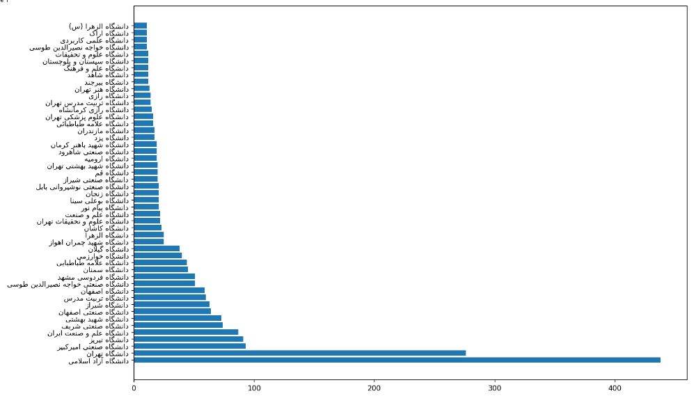
اگر واحد های مختلف دانشگاه آزاد رو تجمیع کنیم و دوباره نمودار بالا رو رسم کنیم نتیجه به صورت زیر میشه :
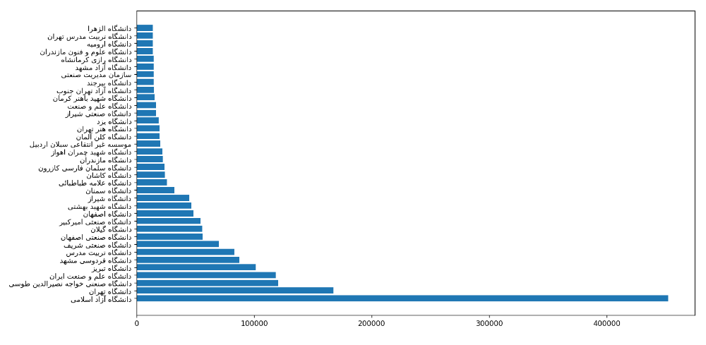
میبینید که الان دانشگاه آزاد اول شد! در واقع بیشتر مدرسین فرادرس در یکی از واحد های دانشگاه آزاد درس خواندند. حالا بیاید بررسی کنیم مدرسین کدوم دانشگاه بیشترین تعداد دانشجو رو داشتند :
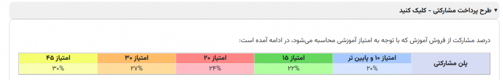
همونطور که انتظار داشتیم، مدرسینی که در دانشگاه آزاد تحصیل کردند، بیشترین تعداد دانشجو را در فرادس دارند. منطقیه، چون تعداد مدرسین بیشتری داره.فرادرس یه طرح پرداخت مشارکتی داره که درصدی از فروش رو به مدرس میده :
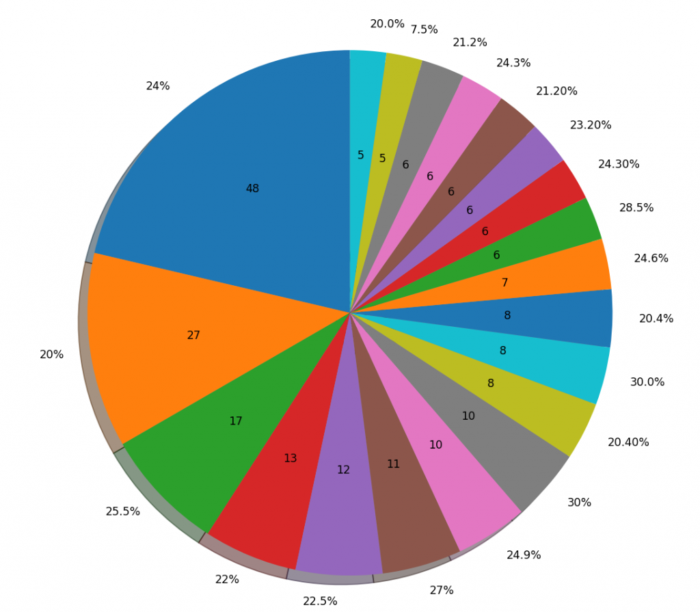
توی دیتایی که جمعآوری کردم، برای هر مدرس یه پارامتر به نام amount_percent وجود داره که به نظر میرسه همین درصد مشارکت در فروش باشه. حالا اگر نمودار دایرهای این درصد ها رو ترسیم کنیم نتیجه به صورت زیر میشه :
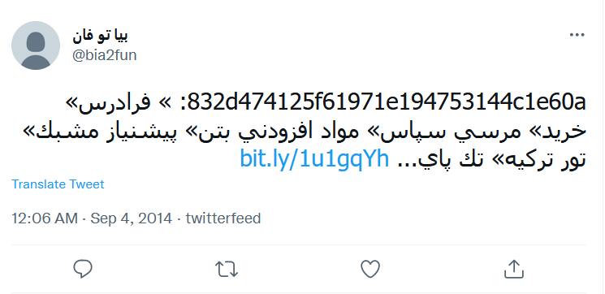
همونطور که میبینید ۴۸ نفر از مدرسین، ۲۴ درصد از سود حاصل از فروش رو دریافت میکنن. درصد مشارکت ۴ مدرس زیر هم ۵۰ درصده که بیشترین درصد سود رو دریافت میکنند :
https://faradars.org/instructors/maryam-barghmadi
https://faradars.org/instructors/nahid-ramezan-khani
https://faradars.org/instructors/mahdokht-najar-torghabeh
https://faradars.org/instructors/nikta-kalali-moghadam
هر ۴ نفر هم در زمینه فنیحرفهای و هنر کار میکنن که در نوع خودش جالبه! دلیل اینکه امتیازشون انقدر بالاست رو واقعا نمیدونم!
حالا بریم سراغ توییتر فرادرس! من اومدم دو کلمه «فرادرس» و «FaraDars» رو در توییتر جستجو کردم و تمام توییت هایی که شامل یکی از این دو کلمه بودند رو جمعآوری کردم. توییت ها رو از تاریخ چهارشنبه، ۱۲ شهریور ۱۳۹۳ تا جمعه، ۲۸ اَمرداد ۱۴۰۱ جمع آوری کردم :
مجموع تعداد توییت های جمعآوری شده ۱۱,۲۰۳ عدد است که توسط ۳۸۵۲ نفر نوشته شده است. اول ببینیم نخستین توییت در چه سالی نوشته شده و در سال های مختلف چه تعداد توییت در مورد فرادرس نوشته شده؟اولین توییت در تاریخ چهارشنبه، ۱۲ شهریور ۱۳۹۳ نوشته شده :
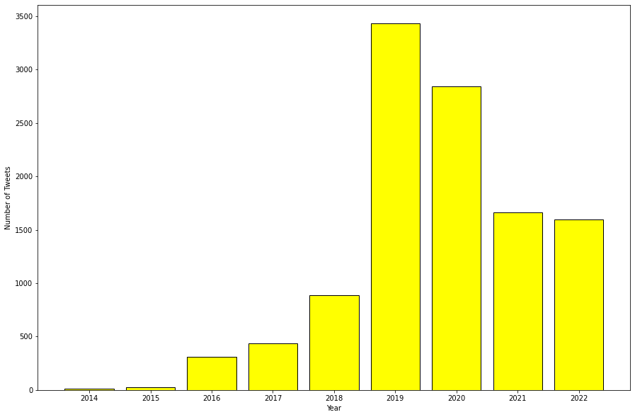
نمودار زیر نشون میده از سال ۲۰۱۴ تا الان هر سال چه تعداد توییت در مورد فرادرس نوشته شده :
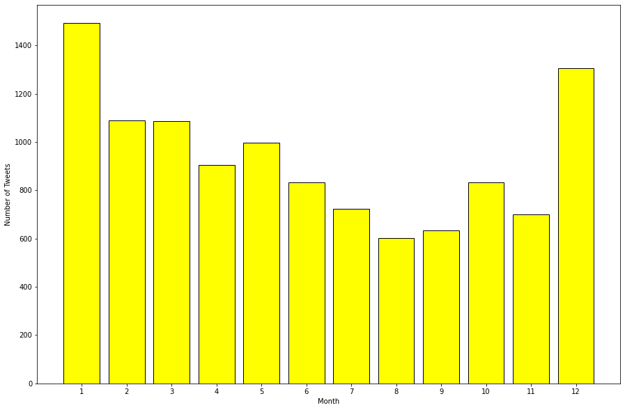
نمودار زیر نشون میده در چه ماه هایی (شمسی) از سال بیشترین توییت نوشته شده :
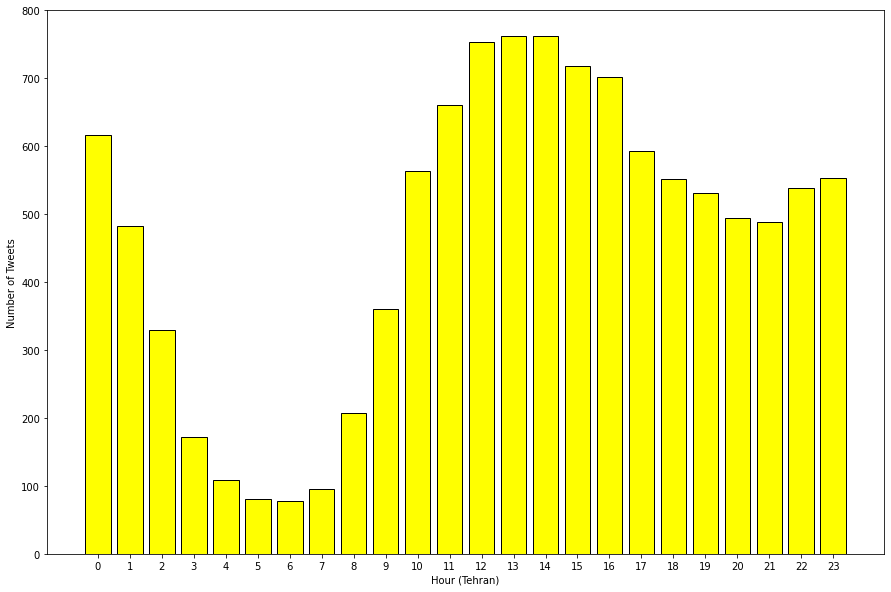
همونطور که مشاهده میکنید، بیشترین توییت ها مربوط به اسفند و فروردین میشه.نمودار زیر هم نشون میده در چه ساعاتی از شبانهروز بیشترین توییت نوشته شده :
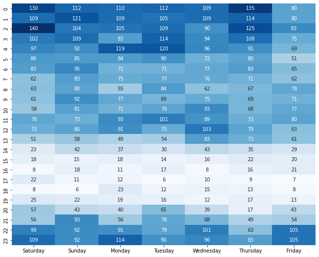
هیت مپ زیر نشان میدهد در چه روزی از هفته و در چه ساعتی از شبانهروز (مطابق ساعت تهران) بیشترین توییت نوشته شده است :
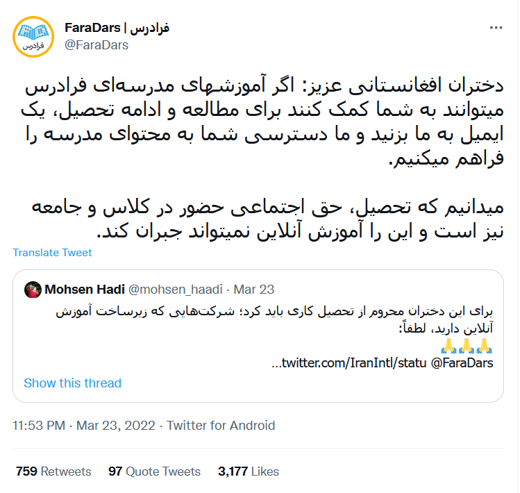
توییت های زیر بیشترین تعداد لایک رو داشتند :
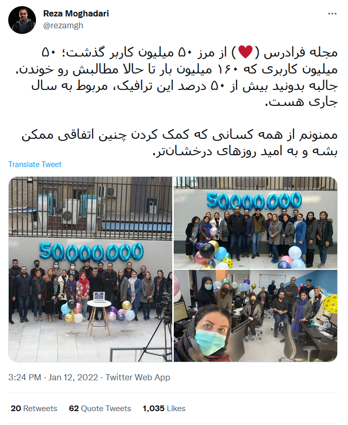

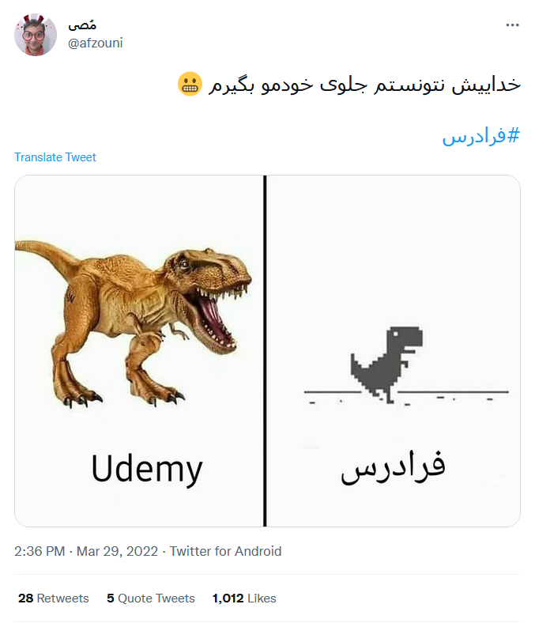
اگر ابر کلمات توییت هایی که در مورد فرادرس نوشته شده رو رسم کنیم نتیجه به صورت زیر میشه :
دیتاست رو هم اینجا گذاشتم :
https://www.kaggle.com/datasets/johntukey/faradars
nb.neighbours()
| title | date | |
|---|---|---|
| prev | چرا زمستان بیشتر زلزله میآید؟ (بررسی یک شایعه) | ۱۴۰۱/۰۴ |
| next | تگهای EXIF و بحران حریم خصوصی! | ۱۴۰۱/۰۶ |